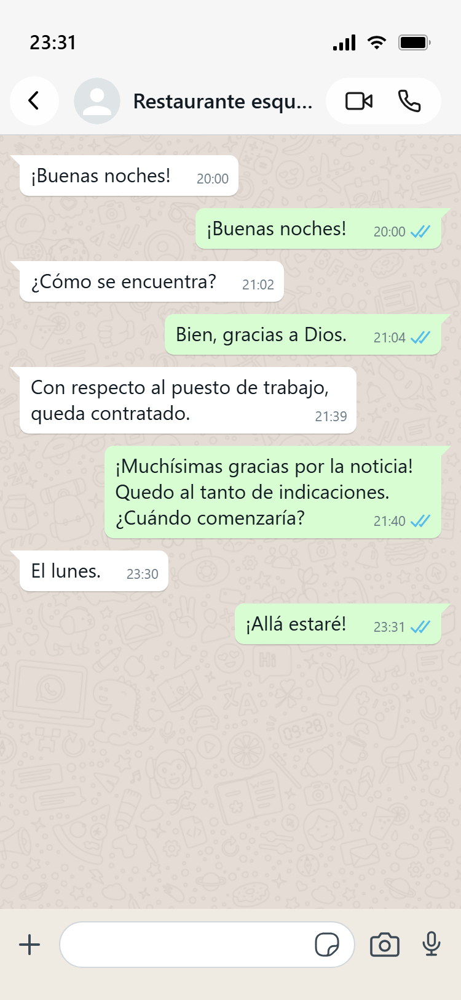
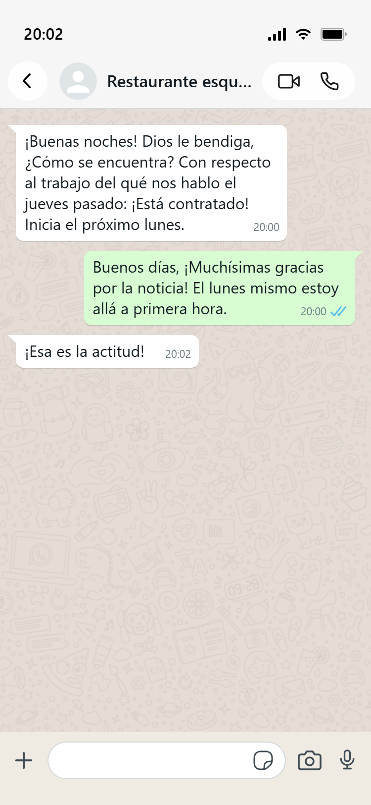
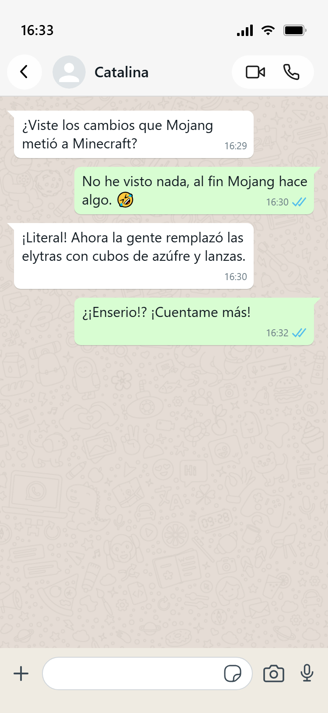
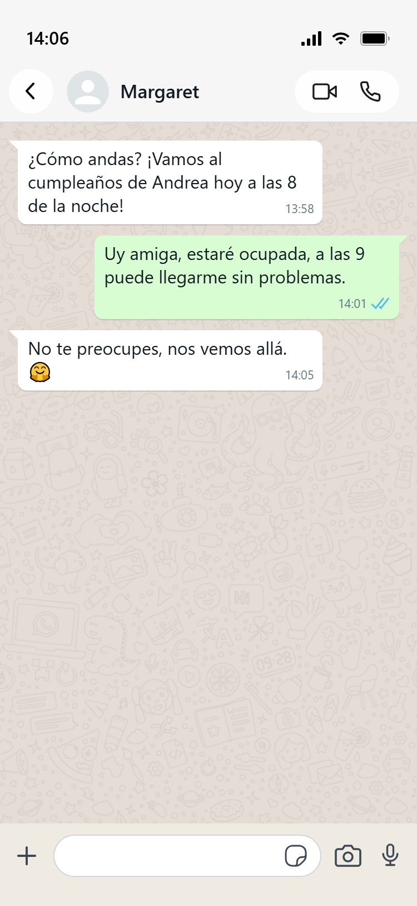
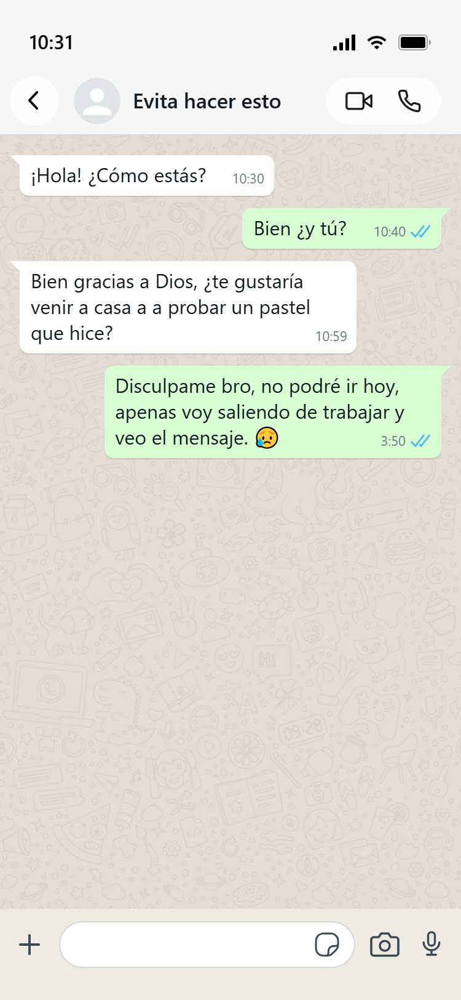
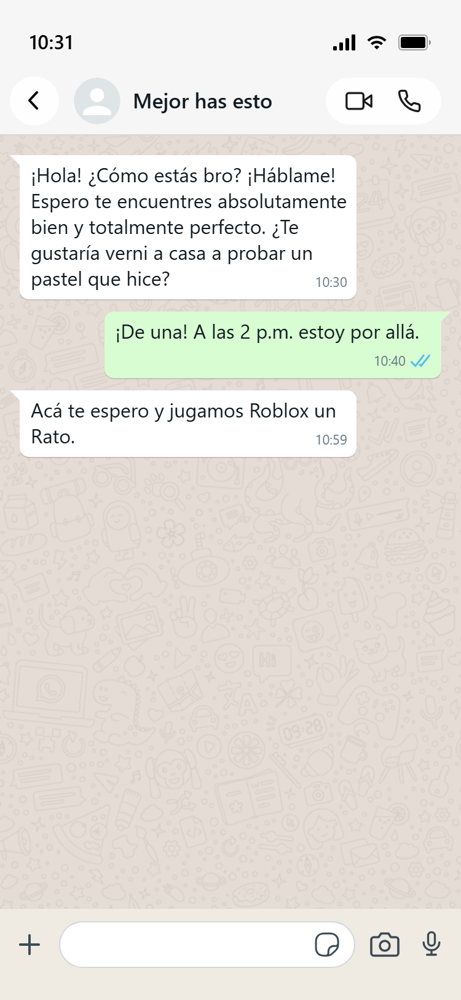
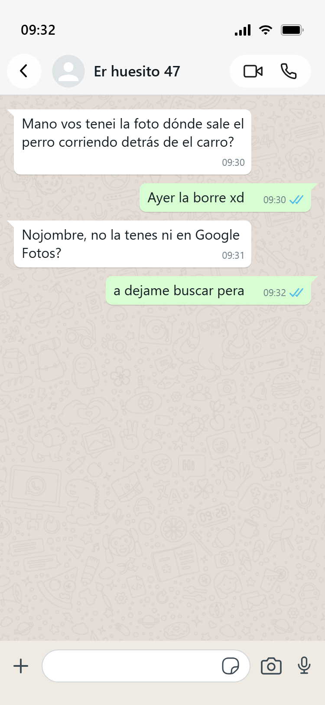
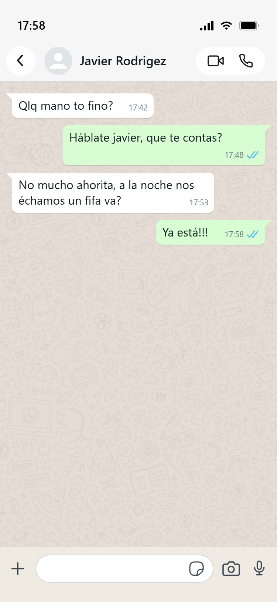

¿Entonces qué puedo hacer?
Desde un principio es mejor que des un poco más de contexto 👀, así haciendo la conversación más fluida y teniendo menos rodeos, por ejemplo:
A priori, algo totalmente insignificante y gran mayoría de veces común, pero para entenderlo mejor, vamos a presentar un ejemplo:


¿Qué fue lo que cambió? ¡Todo! (o casi), al darse más contexto desde un princpio se prioriza la eficiencia de la conversación y así no se pierde la oportunidad como sucedió en el primer ejemplo.
Desde un principio es mejor que des un poco más de contexto 👀, así haciendo la conversación más fluida y teniendo menos rodeos, por ejemplo:


¡En lo absoluto! Saludar demuestra cortesía y una buena educación, lo que sí deberías cambiar es la forma en que lo haces, por ejemplo:


Tampoco te precipites mucho, en una entrevista de trabajo se busca eficiencia pero para hablar con tu amigo(a) de infancia no tiene sentido. ¡Sé tú mismo(a)! De hecho, una conversación no es tan artificial, es algo más como:

